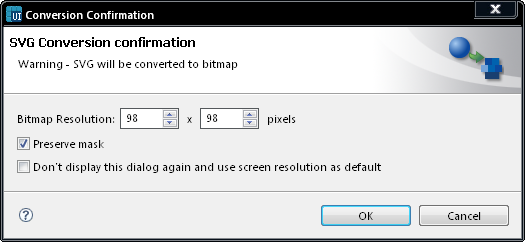

Extracting masks
- In the Editor, right-click
an svg image and select Convert and
edit in Bitmap
editor.
- Conversion confirmation
window opens.
- Select conversion settings.
- Ensure that you mark the Preserve
mask checkbox.
- Click OK.
- Edit the image in an
external bitmap editor.

Figure: Extracting Mask
Note: The figure must be
edited
and saved in order to make the mask visible.
- Save changes and exit the
editor.
- In the Layers view, the mask
is displayed as a separate
layer.